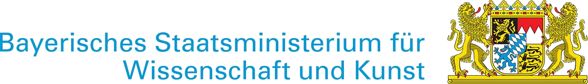

A sovereign, multi-modal foundation model for medicine -- unifying imaging, omics, biosignals, clinical text, and tabular data into a single shared representation of human health.
A foundation model is a large neural network pre-trained on vast, diverse data. Rather than training a narrow model for each task, a single powerful model learns general representations that any downstream application can build on -- by prompting, fine-tuning, or retrieval.
Billions of parameters learn the structure of language, images, and biology from large, heterogeneous corpora -- developing a deep prior over the natural world.
Any input -- an image, a sentence, a DNA sequence -- maps to a semantically meaningful vector. Related concepts are close in this space, regardless of their original format.
With lightweight adaptation, the same model powers diagnosis, prognosis, retrieval, generation, and clinical reasoning -- no full retraining required.
Every patient generates data across many modalities that clinicians integrate intuitively but that AI systems treat as separate silos. We train specialised encoders for each domain and project them all into a unified 8192-dimensional shared embedding.
CT, MRI, X-ray, ultrasound. Volumetric and 2D encoders (MedSigLIP, CT-CLIP, Rad-DINO) learn anatomy and pathology from pixels and voxels.
Subproject A -- FAU / TUMGigapixel whole-slide images from surgical biopsies. Patch-level encoders (UNI, TITAN) map tissue morphology into the shared space at cellular resolution.
BRIDGE -- Radiology-PathologySingle-cell RNA, DNA sequences, proteomics. Foundation models (scGPT, Nicheformer) encode the molecular state of cells and tissues at nucleotide resolution.
FORTE -- Omics IntegrationECG, EEG, wearable sensor streams. Time-series transformers capture longitudinal physiological dynamics -- heartbeat to brainwave -- in compact vectors.
Subproject C -- LMURadiology reports, discharge summaries, clinical notes in German and English. A large VLM backbone acts as the universal semantic pivot across all modalities.
Subproject A -- FAU / TUMLab values, ICD codes, medications, demographics, FHIR records. TabPFN and EHR-adapted transformers encode the full structured clinical history.
Subproject C -- LMUEach encoder produces a TokenBundle -- a structured pointer to modality-specific features. The fusion layer projects all bundles into a single SharedEmbedding of exactly 8192 dimensions, regardless of which modalities are available for a given patient.
Almost every medical dataset pairs data with text. We align imaging to text, and omics to text independently. Because Image ~ Text and Omics ~ Text, Image ~ Omics transitively -- without ever needing paired image-omics patients.
Patient data never leaves the hospital. FAU, TUM, and LMU each maintain a local data lake and train locally. Only privacy-preserving gradients and embeddings are exchanged -- never raw clinical records.
A patient with only a chest X-ray and a blood panel produces a valid SharedEmbedding identical in format to one with the full data. The fusion layer is explicitly trained to handle any combination of present and absent modalities.
Each modality service exposes its encoder as an MCP tool. The fusion orchestrator discovers and calls these tools at runtime -- the same protocol that governs modern LLM agent systems.
AI-BAY-HEALTH executes in four phases across 36 months, with 1.5 million GPU-hours at NHR@FAU (H200) and 3 million GPU-hours at JUPITER (GH200 via CRESCENDO), funded by the Bavarian State Ministry of Science and the Arts.
Establish decentralised data lakes at FAU, TUM, LMU. Implement data readers for DICOM, NIfTI, h5ad, EDF, FHIR. Ingest public datasets. Set up the Globus data fabric.
Milestone M3: readers operationalTrain specialised unimodal models: MedSigLIP for imaging, scGPT and Nicheformer for omics, Signal Transformer for ECG/EEG, TabPFN for EHR. Lock the 8192-dim interface.
Milestone M9: all encoders trainedProject all encoders into the shared space via contrastive text-pivot alignment. Macro-micro alignment between radiology and pathology. Knowledge graph regularisation via UMLS/SNOMED.
Milestone M12: cross-modal retrieval liveConnect the 8192-dim embeddings to a large VLM backbone via soft-prompt injection. Deploy the AI-BAY-Box at UKER, TUM Klinikum, and LMU Klinikum. Submit the Nature paper draft.
Milestone M15: pilot at 3 sitesWhen all clinical modalities converge on a shared embedding space, capabilities arise that no single-modality model can achieve. These are scientific hypotheses -- not guarantees -- and testing them is at the core of why this project exists.
Given an MRI scan, retrieve the most semantically similar pathology slides -- across institutions, without exchanging raw images. The embedding space dissolves modality boundaries.
A disease with only three known cases in the training data. Because the VLM has seen its textual description, it can identify the imaging pattern in a new patient -- never having seen that exact combination before.
When a patient cannot undergo MRI, the model predicts what the MRI embedding would have looked like from their available CT and lab data. A quantifiable bound on the prediction uncertainty is included.
Inferring a tumour's EGFR mutation status or immune infiltration directly from a radiological scan -- without genomic sequencing. A consequence of aligning imaging and omics in a shared space.
Models trained at UKER, TUM Klinikum, and LMU Klinikum on disjoint patient populations generalise across all three sites, via shared embedding alignment -- without ever centralising data.
A clinician asks: "Summarise the oncological risk for this patient given their last CT, three ECGs, and recent labs." The VLM backbone reasons across all modalities simultaneously, in natural language.
AI-BAY-HEALTH exists because of the visionary commitment of the Bavarian state government and the world-class computing infrastructure it has built at Bavarian universities. We are deeply grateful for this support.

AI-BAY-HEALTH is generously funded by the Bayerisches Staatsministerium fuer Wissenschaft und Kunst (StMWK) as part of Bavaria's landmark AI foundation model initiative. The Ministry's commitment to sovereign, cutting-edge AI research in healthcare enables eleven Bavarian universities and research centres to work as one -- building infrastructure that will serve patients and clinicians across the region for decades to come. We are profoundly grateful for this visionary support.
www.stmwk.bayern.de ↗All large-scale training runs for AI-BAY-HEALTH are executed on the Helma H200 GPU cluster at NHR@FAU (Friedrich-Alexander-Universitat Erlangen-Nurnberg), part of Germany's National High Performance Computing network. The project is allocated 1.5 million GPU-hours on H200 hardware plus an additional 3 million GPU-hours on the JUPITER GH200 system via CRESCENDO -- the compute backbone that makes training models at the scale of medicine possible.